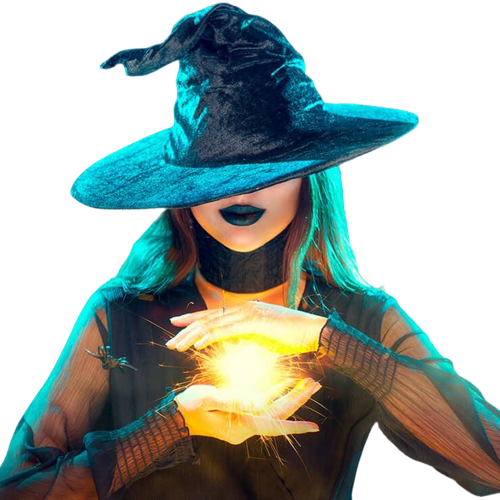
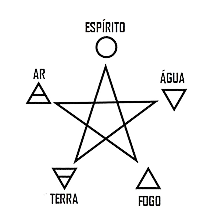

WICCA NATURAL
SEJA UMA WICCA

Durante séculos Ritos Wicca necessitam de algumas ferramentas: faca cega (athame), varinha mágica,
um pentagrama, um cálice, um caldeirão, velas, incensos e às vezes um cabo de vassoura.
O batismo de um bebê na Wicca é chamado de wiccaning. A cerimonia é feita quando a lua está alinhada ao signo. Um
praticante deve desenhar um círculo mágico, ascendendo uma vela com o nome, signo e data de nascimento da criança.
MENSTRUAÇÃO:
A cultura judaico-cristã estigmatizou o sangue menstrual como algo sujo, percebido como símbolo perigoso de um poder
feminino que se desejava apagar. No entanto, nem sempre o sangue menstrual foi considerado símbolo de sujeira e
fragilidade. Especula-se que na pré-história os aspectos ligados ao ciclo reprodutor feminino eram considerados um
símbolo de poder. Por ser capaz de menstruar, sangrar sem morrer e dar à luz a uma nova vida, a mulher teria sido
considerada como muito poderosa pelas culturas paleolíticas.
ELEMENTOS:
A Wicca compreende e estuda os fenômenos da natureza, por isso tem como essência entender os elementos: Terra, Ar,
Fogo e Água. Com a soma de todos eles se tem o resultado do espírito. Assim para aqueles que praticam a Wicca,
deve-se compreender e estudar os ciclos e elementos.
A WICCA NÃO RESPEITA E NÃO ACREDITA EM JESUS CRISTO?
Totalmente errado, todos respeitam a existência das pessoas que fizeram o bem para a humanidade, mas a diferença
está em acreditar que a salvação vem de Jesus Cristo ou de outras entidades de outras religiõesWICCANOS NÃO ACREDITAM EM DEUS?
Eles não acreditam no mesmo Deus que os cristãos porque são politeístas, isto é, acreditam em duas deidades o Deus e
a Deusa.ADORAM O DIABO?
O Diabo é uma figura cristã, por isso é impossível eles adorarem uma deidade cristã já que estão em outra religião.
Wiccanos não são satanistas, eles são bruxos.
